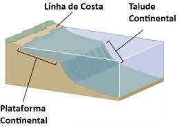

Dicionário
PL2 2023-10-11
abas
EN : flaps
def :
é um dispositivo de alta sustentação que consiste em um painel articulado ou painéis montados no bordo de fuga da asa. |dom :
partes do avião |
abelha
─────────────
EN : bee
def :
A abelha simboliza a imortalidade, a ordem, a diligência, a lealdade, a cooperação, a nobreza, a alma, o amor e a dor. Algumas características marcantes desses insetos os quais buscam o pólen das flores para produzir seu alimento, são: a organização, o labor e a disciplina. |dom :
sub Carnívoros 1 | ─────────────
abóbora
EN : pumpkin
def :
de cor alaranjada ou avermelhada, muito usado na culinária por sua polpa comestível |dom :
Vegetais |
água
EN : water
def :
líquido incolor, insípido e inodor, essencial para os seres vivos |dom :
bebidas |
alface
EN : lettuce
def :
vegetal de cor verde ou roxa frequentemente utlizado nas saladas |dom :
Vegetais | ─────────────
alho-francês
EN : leek
def :
vegetal que pertence à mesma família que as cebolas e os alhos |dom :
Vegetais |
ánanas
EN : pineapple
def :
é um simbolo das regiões tropicais e sobtropicais |dom :
Frutas |
antebraço
EN : forearm
def :
é uma região dos membros superiores que se estende
do cotovelo ao punho e consiste nas porções antebraquiais anterior e posterior, compostas pelo
rádio e ulna |dom :
membros superiores e inferiores |
asa
EN : wing
def :
dispositivo mecânico destinado à sustentação aerodinâmica |dom :
partes do avião |
autocarro
PT : ônibus
EN : bus
def :
a large motor vehicle carrying passengers by road, typically one serving the public on a fixed route and for a fare. |dom :
transportes pesados |
batata
EN : potato
def :
tubérculo que tem a sua origem na América do Sul mas que, hoje em dia, se cultiva em diversas regiões do planeta |dom :
Vegetais | ─────────────
EN : potato
def :
acastanhado e geralmente com formato oval ou redondo, é usado como acompanhamento de vários pratos |dom :
plantações |
bicicleta
EN : bicycle
def :
a vehicle consisting of two wheels held in a frame one behind the other, propelled by pedals and steered with handlebars attached to the front wheel. |dom :
transportes leves |
boca
EN : mouth
def :
abertura e cavidade que se situa na parte interior da face, por onde se ingerem os alimentos e se emitem sons da fala |dom :
cabeça |
bochecha
EN : cheek
def :
parte saliente e carnuda de cada uma das faces |dom :
cabeça |
boi
─────────────
EN : bull
def :
mamífero ruminante da família dos bovídeos, com raças domesticadas, muito usado na produção de carne, couro ou em tarefas agrícolas |dom :
animais de quinta |
borboleta
─────────────
─────────────
braços
EN : arms
def :
região do membro superior que se estende do ombro
até à articulação do cotovelo e que se conecta inferiormente ao antebraço através da fossa cubital |dom :
membros superiores e inferiores |
cabelo
EN : hair
def :
conjunto de pelos que revestem normalmente a parte superior e posterior da cabeça |dom :
cabeça |
cabine de comando
EN : cockpit
def :
é uma área usualmente situada na parte dianteira de uma aeronave, de onde os pilotos a controlam |dom :
partes do avião |
cabra
EN : goat
def :
animal mamífero do género Capra, da família dos bovídeos, com chifres ocos, arqueados para trás, que compreende várias espécies; fêmea do bode. |dom :
animais de quinta |
café
EN : coffee
def :
bebida produzida a partir dos grãos torrados do fruto do cafeeiro |dom :
bebidas |
camélia
EN : camellia
def :
Arbusto ornamental (Camellia japonica), da família das teáceas, de folhas ovais e lustrosas e flores geralmente de cor vermelha, rosa ou branca. |dom :
flores | ─────────────
EN : camellia
def :
Arbusto ornamental (Camellia japonica), da família das teáceas, de folhas ovais e lustrosas e flores geralmente de cor vermelha, rosa ou branca. |dom :
flores |
camelo
EN : camel
def :
mamífero quadrúpede, da família dos Camelídeos, de origem asiática, de grande porte, ruminante, com pelagem castanha, pescoço comprido e duas corcovas dorsais, muito utilizado como meio de transporte e animal de carga nas regiões áridas |dom :
sub Carnívoros 1 | ─────────────
EN : camel
def :
Um camelo é um grande animal que vive em regiões áridas e tem uma ou duas bossas nas costas. Eles são conhecidos por sua capacidade de armazenar gordura nessas bossas para sobreviver em desertos. |dom :
sub Herbívoros |
cardiologista
EN : cardiologist
def :
médico especializado em diagnosticar e tratar doenças do coração |dom :
médicos |
carro
EN : car
def :
a four-wheeled road vehicle that is powered by an engine and is able to carry a small number of people. |dom :
transportes leves |
cebola
EN : onion
def :
é um bulbo de folhas concêntricas que apresenta boa proteção contra a desidratação |dom :
Vegetais |
cenoura
EN : carrot
def :
vegetal alaranjado, cozidas em sopas e refogados |dom :
Vegetais | ─────────────
EN : carrot
def :
vegetal alaranjado, cozidas em sopas e refogados |dom :
Vegetais |
cérebro
EN : brain
def :
órgão principal e centro do sistema nervoso |dom :
cabeça | ─────────────
EN : brain
def :
substância que forma a parte anterior e superior do encéfalo |dom :
Sistema nervoso |
cerveja
EN : beer
def :
bebida alcoólica obtida por meio da fermentação do malte de cevada, ou de outros cereais |dom :
bebidas |
ciclomotor
EN : moped
def :
a light motor cycle, especially one with an engine capacity of not more than 50 cc. |dom :
transportes leves |
cirugião
EN : surgeon
def :
médico que realiza cirurgias para tratar diversas condições médicas |dom :
médicos |
clima
EN : climate
def :
estudo médio do tempo para o determinado período ou mês em uma certa localidade |dom :
Clima |
clima polar
EN : polar climate
def :
ocorre em áreas de grande altitude, é caracterizado por registos de temperaturas muito baixas e recorrente presença de neve |dom :
Clima |
clima tropical
EN : tropical climate
def :
ocorre nas faixas intermediárias do planeta e é marcado por ocorrência de estações bem definidas, uma quente e húmida e outra mais fria e seca |dom :
Clima |
corgete
EN : courgette
def :
variedade de abóbora, usada na alimentação humana, de forma alongada, casca verde e polpa branca ou amarelada |dom :
Vegetais |
couve
EN : cabbage
def :
legume verde muito utilizado em sopas e também como acompanhamento de pratos |dom :
plantações |
dentes
EN : teeth
def :
estrutura de origem óssea cuja função é cortar, rasgar e moer os alimentos, sendo também importantes na articulação de sons e de palavras |dom :
cabeça |
depressão
EN : depression
def :
porção de relevo que possiu altitude mais baixa do que as áreas em seu entrono |dom :
relevo |
Detetives
EN : Detectives
def :
Investigam crimes, coletam evidências e trabalham na resolução de casos complexos. |dom :
polícias |
estabilizador horizontal
EN : elevator
def :
estrutura móvel fixada no estabilizador Horizontal que controla o movimento do avião para cima ou para baixo, ou a sua subida ou descida |dom :
partes do avião |
estabilizador vertical
EN : rudder
def :
estrutura aerodinâmica móvel incluída na empenagem do avião, cujo objectivo é controlar a estabilidade longitudinal (arfagem) e direcional(guinada) |dom :
partes do avião |
estômago
EN : stomach
def :
órgão do aparelho digestivo, em forma de bolsa, onde o bolo alimentar é digerido |dom :
Sistema digestivo |
faringe
EN : pharynx
def :
órgão constituído por tecido muscular e membranoso, e que estabelece a ligação do nariz e da boca com a laringe e o esófago |dom :
Sistema digestivo |
fígado
EN : liver
def :
segundo maior órgão do corpo humano, responsável pela secreção da bile e também atua em outros processos, como no armazenamento de glicogênio e desintoxicação |dom :
Sistema digestivo |
gambá
EN : possum
def :
Gambá é um mamífero marsupial, assim como coala e canguru. O termo gambá é usado para se referir a diferentes espécies da família Didelphidae. Esses animais se destacam por ter um corpo maciço, focinho alongado, membros curtos, orelhas desenvolvidas e uma cauda preênsil, semelhante ao corpo de um roedor. |dom :
sub Carnívoros 1 | ─────────────
EN : possum
def :
Um gambá é um pequeno mamífero marsupial encontrado nas Américas, conhecido por sua pelagem cinza e preta, cauda longa e pelo cheiro desagradável que emite quando ameaçado. |dom :
sub Carnívoros |
girassol
EN : sunflower
def :
Planta da família das compostas cujas flores, grandes e amarelas, se voltam para o sol. |dom :
flores | ─────────────
EN : sunflower
def :
Planta da família das compostas cujas flores, grandes e amarelas, se voltam para o sol. |dom :
flores |
gorilla
EN : gorilla
def :
Gorilla, diurnos e esp. vegetarianos, com uma única sp. (Gorilla gorilla) encontrada nas florestas tropicais da África equatorial, onde vive esp. no chão, em grupos de até 30 indivíduos; com até 1,75 m de altura, pelagem curta e predominantemente negra, focinho curto, orelhas muito pequenas e membros anteriores maiores que os posteriores; gorilha [Espécie ameaçada de extinção.] |dom :
sub Carnívoros 1 |
laranja
EN : orange
def :
de forma esférica, dividida em gomos, pertence ao grupo dos Citrus |dom :
Frutas |
lichia
EN : lychee
def :
tem uma casca avermelhada, rugosa e um interior branco, possuindo um sabor levemente ácido |dom :
Frutas |
língua
EN : tongue
def :
órgão móvel da cavidade bocal |dom :
cabeça |
maçã
EN : apple
def :
com propriedade adstringente, sendo excelente para a granganta e as cordas vocais |dom :
Frutas |
macieira
EN : apple tree
def :
árvore de maçãs |dom :
árvores | obs :
podem ser vermelhas, amarelas ou verdes | ─────────────
maracujá
EN : passion fruit
def :
tem uma polpa com pequenas sementes pretas, é usado para fazer sumos e doces |dom :
Frutas |
margarida
EN : daisy
def :
Designação dada a várias plantas da família das asteráceas, entre as quais a margarida-dos-prados ou bonina ou o malmequer. |dom :
flores | ─────────────
EN : daisy
def :
Designação dada a várias plantas da família das asteráceas, entre as quais a margarida-dos-prados ou bonina ou o malmequer. |dom :
flores |
melancia
EN : watermelon
def :
constituída por 93 por cento de agua, ela tem um sabor doce e é refrescante |dom :
Frutas |
membros superiores e inferiores
montanha
EN : mountain
EN : hill
def :
forma de relevo que apresenta as mais elevadas altitudes |dom :
relevo |
nabo
EN : turnip
def :
vegetal com raízes brancas ou arroxeadas comestíveis |dom :
Vegetais |
nariz
EN : nose
def :
parte saliente do rosto que corresponde ao órgão do olfato |dom :
cabeça |
nuca
EN : nape
def :
parte superior e posterior do pescoço |dom :
cabeça |
olhos
EN : eyes
def :
órgão responsável pela visão do ser humano |dom :
cabeça |
ombro
EN : shoulder
def :
articulação mais flexível de todo o corpo humano sendo
composto por duas articulações separadas: as articulações glenoumeral e acromioclavicular |dom :
membros superiores e inferiores |
ônibus
PT : autocarro
EN : bus
def :
a large motor vehicle carrying passengers by road, typically one serving the public on a fixed route and for a fare. |dom :
transportes pesados |
orelha
EN : ear
def :
parte externa do órgão do ouvido |dom :
cabeça |
orquídea
EN : orchid
def :
Designação genérica das flores e das plantas da família das orquidáceas, de flores notáveis pela sua beleza, colorido e forma. |dom :
flores | ─────────────
EN : orchid
def :
Designação genérica das flores e das plantas da família das orquidáceas, de flores notáveis pela sua beleza, colorido e forma. |dom :
flores |
ovelha
EN : sheep
def :
a fêmea do carneiro, mamífero da família dos bovídeos, utilizado para o fornecimento de lã e de carne |dom :
animais de quinta |
pálpebra
EN : eyelid
def :
véu ou túnica exterior que cobre e resguarda o olho |dom :
cabeça |
patinete
PT : trotinete
EN : scooter
def :
a light two-wheeled open motor vehicle on which the driver sits over an enclosed engine with their legs together and their feet resting on a floorboard. |dom :
transportes leves |
pera
EN : pear
def :
é considerada a fruta por exelência para dar a um bébé |dom :
Frutas |
pernas
EN : legs
def :
membro inferior do corpo humano, desde o quadril até
o tornozelo o tornozelo, ioncluindo as coxas, os joelhos e as panturrilhas |dom :
membros superiores e inferiores |
physalis
EN : physalis
def :
sabor refrescante e possui uma leve acidez, sendo parecido a um tomate e envolvido em folhas |dom :
Frutas |
pimento
EN : pepper
def :
planta solanácea cujo fruto, mais ou menos picante, é empregado como condimento |dom :
Vegetais |
Planalto
EN : tableland
EN : plateau
def :
forma de relevo plano e mais alto que as planícies com altitude em média superior a 300m |dom :
relevo |
planície
EN : plain
EN : flatland
def :
forma de relevo relativamente palana que se localiza a baixa altitude |dom :
relevo |
Polícia Comunitária
EN : Community Police
def :
Estabelecem relações positivas com a comunidade e resolvem problemas locais de segurança. |dom :
polícias |
Polícia Marítima
EN : Maritime Police
def :
Patrulham áreas aquáticas, como portos e praias, para garantir a segurança marítima. |dom :
polícias |
Polícia Montada
EN : Mounted Police
def :
Patrulham a cavalo em áreas urbanas e parques para manter a ordem pública. |dom :
polícias |
Polícia Patrulha
EN : Patrol Police
def :
Responsável pela aplicação da lei nas ruas e pela manutenção da segurança pública. |dom :
polícias |
Polícias de Trânsito
EN : Traffic police
def :
Aplicam as leis de trânsito, monitoram o tráfego e investigam acidentes de trânsito. |dom :
polícias |
pombo
EN : pigeon
def :
ave de pequeno porte, geralmente cinza claro, com uma mancha púrpura e uma mancha verde na lateral do pescoço. O seu bico é cinzento e os pés são laranja avermelhados |dom :
aves voadoras | hpr :
ave doméstica |
pressão atmosférica
EN : atmos
def :
medida que aponta o peso que o ar exerce sobre a superfície terrestre |dom :
Clima |
profissionais de laboratório
queixo
EN : chin
def :
região saliente por baixo lábio inferior |dom :
cabeça |
raposa
EN : fox
def :
Uma raposa é um mamífero carnívoro pertencente à família dos canídeos. Ela é conhecida por sua aparência elegante e astúcia, sendo considerada um dos animais mais inteligentes do reino animal. Existem várias espécies de raposas, sendo a raposa vermelha a mais comum e conhecida. |dom :
sub Carnívoros 1 | ─────────────
EN : fox
def :
Uma raposa é um animal selvagem parecido com um cão, conhecido por sua astúcia e cauda felpuda. |dom :
sub Carnívoros |
reboque
EN : tow truck
def :
a truck with special equipment for pulling a vehicle that is not working to a place where it can be repaired |dom :
transportes pesados |
refrigerante
EN : soda
def :
bebida gasosa, com sabor adocicado |dom :
bebidas |
repolho
EN : cabbage
def :
vegetal pertencente ao gênero Brassica, o mesmo do brócolo, da couve-flor e da couve |dom :
Vegetais |
romã
EN : pomegranate
def :
simboliza fecundidade, esperança e riqueza, ela é cultivada em clima tropical |dom :
Frutas |
rum
EN : rum
def :
aguardente obtida por fermentação e destilação simples do caldo ou do melaço da cana-de-açúcar |dom :
bebidas |
salsa
EN : parsley
def :
vegetal esverdeado condimentar e medicinal, utilizada desde a antiguidade e difundida em todas as áreas de clima temperado e subtropical |dom :
Vegetais |
semi-reboque
EN : semi-tow trucking
def :
To tow semi-trucks, we use our heavy-duty towing equipment and technology. Because semi-trucks are so large and heavy, they require specialized equipment and expertise. With heavy-duty hauling equipment, we are able to handle the biggest tow jobs including containers, loaded trailers, and semi-trucks. |dom :
transportes pesados |
sobrancelhas
EN : eyebrows
def :
conjunto de pelos em forma de arco em cima de cada olho |dom :
cabeça |
talude
EN : continental slope
 def :
porção de relevo submarino que se caracteriza por uma inclinação acentuada e estreita |dom :
relevo |
tempo
EN : weather
def :
estado físico das condições atmosféricas em determindado momento e local |dom :
Clima |
tequila
EN : tequila
def :
tipo de aguardente mexicano produzida pela destilação do agave |dom :
bebidas |
terapeuta da fala
EN : speech therapist
def :
trabalha com pacientes para melhorar a comunicação, linguagem e habilidades de deglutição |dom :
terapeutas |
testa
EN : forehead
def :
parte da cara compreendida entre os olhos e a raiz dos cabelos anteriores da cabeça |dom :
cabeça |
trator
EN : tractor
def :
a powerful motor vehicle with large rear wheels, used chiefly on farms for hauling equipment and trailers. |dom :
transportes pesados |
triciclo
EN : tricycle
def :
a vehicle similar to a bicycle, but having three wheels, two at the back and one at the front. |dom :
transportes leves |
trotinete
PT : patinete
EN : scooter
def :
a light two-wheeled open motor vehicle on which the driver sits over an enclosed engine with their legs together and their feet resting on a floorboard. |dom :
transportes leves |
tulipa
EN : tulipe
def :
Género de plantas liliáceas. |dom :
flores | ─────────────
EN : tulipe
def :
Género de plantas liliáceas. |dom :
flores |
Unidades Especiais
EN : Special Units
def :
Realizam operações especiais, como SWAT, negociações de reféns e combate ao crime de alto risco. |dom :
polícias |
vaca
EN : cow
def :
animal mamífero e herbívoro que pertence à família dos bovídeos. |dom :
animais de quinta |
veículo articulado
EN : articulated vehicle
def :
An articulated vehicle is a vehicle which has a permanent or semi-permanent pivot joint in its construction, allowing it to turn more sharply. |dom :
transportes pesados |
vinho
EN : wine
def :
bebida que resulta da fermentação alcoólica com uvas |dom :
bebidas |


{kind=link}
{kind=link}
{kind=link}
{kind=link}
{kind=link}
{kind=link}
{kind=link}
{kind=link}
{kind=link}
{kind=link}